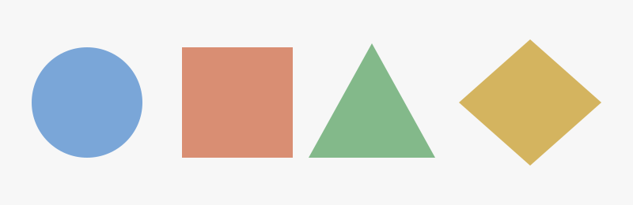

Convert ordinary HTML image maps into responsive, keyboard-focusable SVG overlays in the browser. Style and animate the map regions with CSS and let the browser handle the rest.
-
Supports
rect,circle,poly, anddefaultshapes. - Transfers links, accessibility labels, and compatible HTML attributes to the generated SVG regions.
- Works via an auto-running bundle or an ES module.
- No runtime dependencies.
Why image maps?
I think image maps are cool. They are a simple way to attach links to parts of an image. Their fixed coordinates, however, do not adapt to responsive layouts, and their regions are difficult to style.
SVG Map converts <map> markup into SVG
geometry that scales with the image and can be styled, or
even animated, with CSS. Nostalgia of the '90s on the modern
web.
Live demo
Hover, click, or use Tab to move between the four mapped shapes. Change the image width to confirm that the regions remain aligned.

Active region: Circle (circle)
-
Circle
circle -
Square
rect -
Triangle
poly -
Diamond
poly
Usage
<script src="svg-map.js"></script>
<img src="shapes.svg" width="800" height="260" usemap="#shapes">
<map name="shapes">
<area shape="circle" coords="110,130,70" href="#circle" alt="Circle">
</map>Or use the module API:
import { convertImageMap, convertAll, init } from "svg-map";
await init();See the README for API and attribute-transfer details.